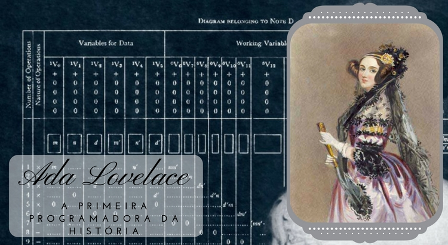

Você sabia que o e-mail foi criado antes da internet? Isso mesmo, o sistema de mensagens eletrônicas se chamava Mailbox e só podia ser acessado em uma única máquina. Os usuários deixavam mensagens no computador, mas elas só seriam lidas se o destinatário fizesse login na mesma máquina1.
Você Sabia?
Você sabia que a primeira foto do mundo foi capturada ao longo de 8 horas? Foi em 1826, na França, que o inventor Joseph Nicéphore Niépce registrou a imagem de uma paisagem usando uma câmera escura e uma placa de estanho coberta com um derivado de petróleo. A exposição à luz demorou tanto tempo que as sombras mudaram de lugar na foto1.
Você Sabia?
Você sabia que ogivas nucleares ficaram protegidas por anos com a senha 00000000? Por incrível que pareça, essa foi a senha usada pelo sistema de lançamento de ogivas nucleares dos EUA durante 20 anos, entre 1962 e 1982. A senha estava anotada em um pedaço de papel guardado entre outros documentos1.
Você Sabia?
Você sabia que o primeiro jogo eletrônico foi criado em 1958 por William Higinbotham, um físico do Laboratório Nacional de Brookhaven, nos Estados Unidos? Ele se chamava Tennis for Two e consistia em um simulador de tênis que usava um osciloscópio como tela3.
Você Sabia?
Você sabia que o primeiro aplicativo para celular foi lançado em 1993 pela IBM? Ele se chamava Simon Personal Communicator e era um dispositivo que combinava as funções de telefone, pager, fax e agenda eletrônica. Ele tinha uma tela sensível ao toque e podia rodar aplicativos como calculadora, calendário e bloco de notas.
Você Sabia?
Você sabia que o primeiro sistema de reconhecimento facial foi desenvolvido em 1964 por Woodrow Bledsoe, um matemático e cientista da computação americano? Ele usou um computador IBM 7090 para medir as distâncias entre os olhos, o nariz e a boca de uma pessoa em uma foto e comparar com um banco de dados de imagens.
Você Sabia?
Você sabia que o primeiro sistema operacional foi desenvolvido em 1956 pela General Motors e a IBM? Ele se chamava GM-NAA I/O e era usado para controlar um computador IBM 704, que tinha 4 KB de memória e podia executar até 40 mil instruções por segundo2.

Você Sabia?
Você sabia que o primeiro software foi criado em 1843 por Ada Lovelace, considerada a primeira programadora da história? Ela escreveu um algoritmo para calcular os números de Bernoulli em uma máquina analítica, um precursor dos computadores modernos1.